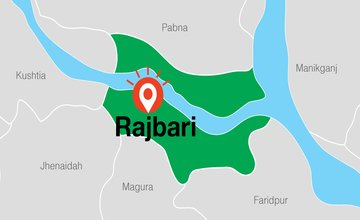

My Hometown
Rajbari, officially known as Rajarbari, is a city in the Dhaka Division of Bangladesh, located along the Dhaka-Rajbari Highway. It is the administrative centre of the Rajbri District, part of the Faridpur.

My hobbies
- Playing Games
- listening Music
- Watching Drama
favourites
Playing Football